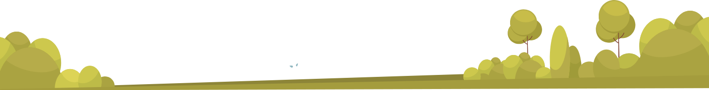
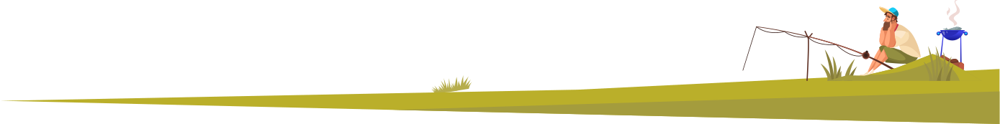
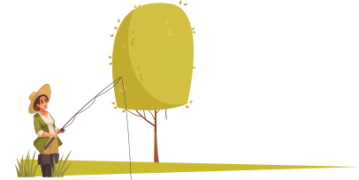
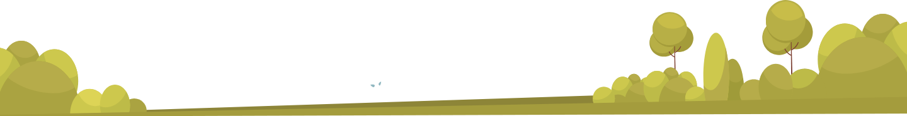
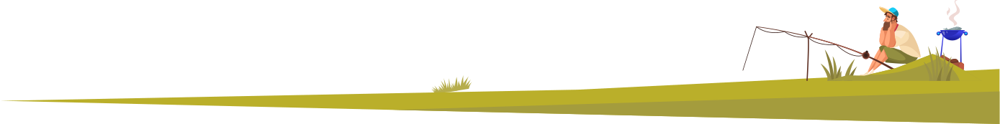
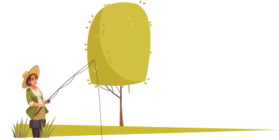

Hoe trek je het juiste talent aan in een krappe arbeidsmarkt?
Op dit moment zijn er veel vissers aan het hengelen in dezelfde vijver. Maar de vis die rondzwemt is schaars en de werkgevers lijken op elkaar. Het resultaat is dat de vis (de potentiële werknemer) niet wil bijten. Deze metafoor is voor veel organisaties de werkelijkheid.
Wij bij – EN HR solutions – pakken het anders aan. Onze specialisten op het gebied van recruitment en arbeidsmarktcommunicatie helpen je graag bij het beantwoorden van de de prangende vraag:: hoe trek je het juiste talent aan in een krappe arbeidsmarkt.
Contacteer ons vrijblijvend voor een kennismakingsgesprek.